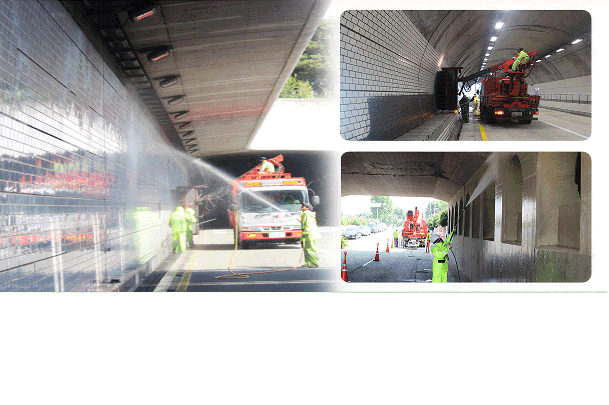

터널 관리
고속도로, 도시고속도로, 지방도 터널 및 지하차도 세척관리
고속도로와 도시고속도로, 지방도 등 사람과 사람을 이어주는 도로를 그린죤의 탄탄한 기술력과 우수한 인력으로 땅 위의 모든 도로를 깨끗하고 아름답게 만들어 갑니다.
터널 청소 과정이 담긴 동영상
사진과 영상 갤러리에서 더 많은 작업 과정을 확인할 수 있습니다.

고속도로와 도시고속도로, 지방도 등 사람과 사람을 이어주는 도로를 그린죤의 탄탄한 기술력과 우수한 인력으로 땅 위의 모든 도로를 깨끗하고 아름답게 만들어 갑니다.
사진과 영상 갤러리에서 더 많은 작업 과정을 확인할 수 있습니다.